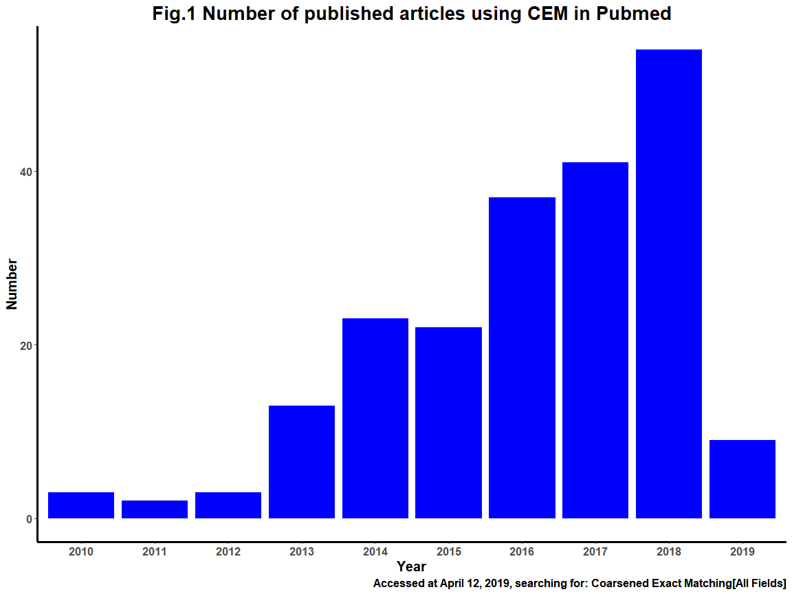
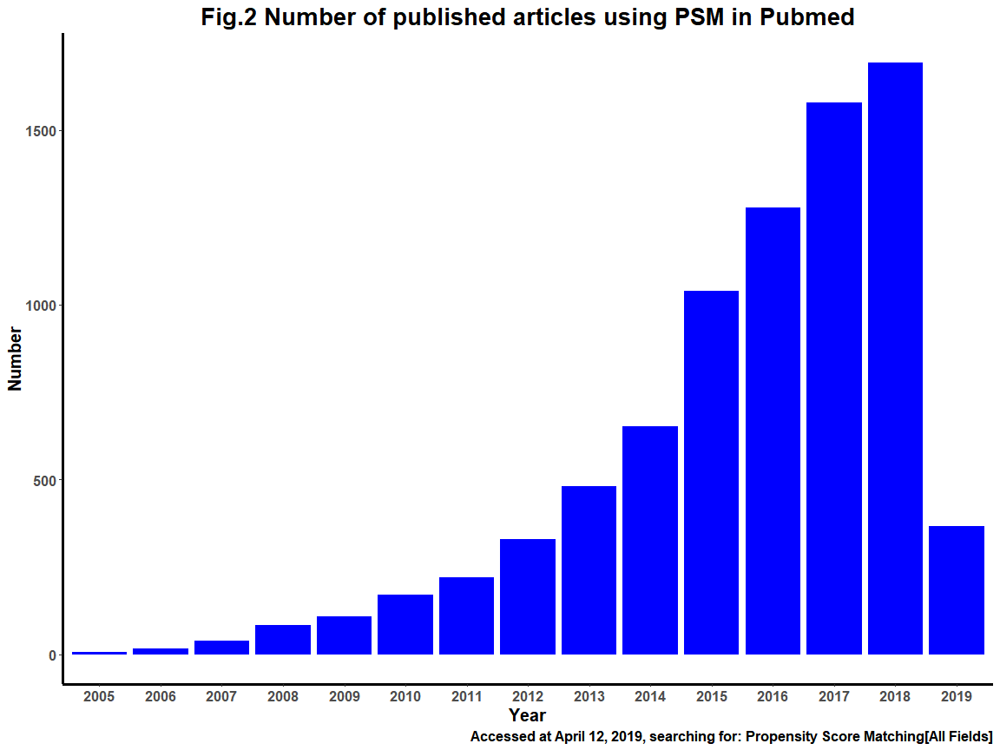

library(magrittr)
library(ggplot2)
# Set seed
set.seed(2019)
# Data
strate <- sample(paste("str", c(1:30), sep = "_"), size = 2000, replace = TRUE)
group <- rep(c("Treat", "Control"), 1000)
imb <- data.frame(strate = strate, group = group)
imb_sum <- prop.table(table(imb$group, imb$strate), 1) %>% as.data.frame()
# Plot
ggplot(imb_sum) +
geom_bar(aes(x = Var2, y = Freq, fill = Var1), position = "dodge", stat = "identity") +
scale_fill_manual(name = "", values = c(3, 2)) +
labs(y = "Prop", x = "Strates") +
theme_bw()7 番外篇（二）：匹配
7.1 引子
“The goal of matching is to reduce imbalance in the empirical distribution of the pre-treatment confounders between the treated and control groups.”
—– Stuart, Elizabeth A. (2010)
7.2 背景介绍
Coarsened Exact Matching (CEM) 方法由University of Milan的Stefano M. Iacus，Harvard University的Gary King， 以及University of Trieste的Giuseppe Porro提出，其算法最早于2008年在线发表在Gary King的Harvard University主页上 “Matching for Causal Inference Without Balance Checking.”。
其后分别在 Journal of Statistical Software (2009) 和 The Stata Journal (2009) 上发表了R和Stata版本的相关package， 其正式成果于2011年发表于 Journal of the American Statistical Association 上，以及2012的Political Analysis上。
CEM亦可称之为“Cochran Exact Matching” ，衍生于Cochran于1986年提出的subclassification-based method （Cochran, W. G., 1968)，在2011年发表的论文中Gary King等人亦将CEM与PSM (Propensity Score Matching)进行了比较，提出了CEM的优势。
7.3 PSM与CEM
在CEM方法提出之前，已有较多的匹配方法，其中最具有代表性的就是 Paul R. Rosenbaum and Rubin (1983) 提出的Propensity score matching (PSM)， 截至目前，使用PSM发表的论文已超过10000篇，是目前最常用的匹配方法。从下图中也能看出两种方法在发表论文中使用的差距。Gary King在一篇Working paper (“Why Propensity Scores Should Not Be Used for Matching”)中指出了PSM的不足，原文如下：
We show here that PSM, as it is most commonly used in practice (or with many of the refinements that have been proposed by statisticians and methodologists), increases imbalance, inefficiency, model dependence, research discretion, and statistical bias at some point in both real data and in data generated to meet the requirements of PSM theory. In fact, the more balanced the data, or the more balanced it becomes by pruning some observations through matching, the more likely PSM will degrade inferences — a problem we refer to as the PSM paradox. If one’s data are so imbalanced that making valid causal inferences from it without heavy modeling assumptions is impossible, then the paradox we identify is avoidable and PSM will reduce imbalance but then the data are not very useful for causal inference by any method.
也许只有名字里带King的人论文题目敢这么写，当然，不出你所料，自然也会有这样一篇文章“Why propensity scores should be used for matching” (Ben Jann, 2017). ,至于CEM与PSM孰优孰劣，只能依据个人研究自行判断了。


7.4 ## 算法
CEM没有PSM那么复杂的反事实假设，其算法一共可分为三步：
- 将所有纳入匹配的协变量，粗化（coarsen）成离散分组，对于已是分类变量的协变量，可以自行设定（比如，性别、教育程度等），而对于连续型变量 CEM算法会根据自动频率分布直方图进行自动粗化，当然也可以自行手动设定cutpoint,s, 并且可以设定自动粗化的方法(Sturges’ rule, the default), “fd” (Freedman-Diaconis’ rule), “scott” (Scott’s rule) and “ss” (ShimazakiShinomoto’s rule)。
- 对所有粗化之后的分类进行分层并排序
- 删除未同时包含至少一个Treat组和Control组的层
7.5 ## 4. 不平衡度测量
CEM中引入了一个参数L1来衡量Treat组和Control组之间在协变量上的不平衡度，其计算公式如下：
L1(f, g) = ∑|fe(1…k)−ge(1…k)|
L1取值在0~1之间，0代表完全平衡，1代表完全不平衡。若L1为0.6，即说明有40%的粗化后各层的频率分布 直方图在Treat组和Control组之间是重叠的，L1即是根据各层的相对频率差值求和而得，示例如下：
假设有三个协变量（X1…X），粗化后个协变量的分类为（2, 3, 5），那么粗化后共有235=30个层， 我们随机为Treat组和Control组在360个层生成一个正整数，最后计算频率并画出直方图。

7.6 ## 5. 匹配
采用R语言中的cem包，示例的dataset为cem包中自带的LeLonde
7.6.1 5.1 示例的dataset介绍
Outcome variable: re78
Treat variable: treated, 1 = treat group, 0 = control group
Control variable: c(“age”, “education”, “black”, “married”, “nodegree”, “re74”, “re75”, “hispanic”, “u74”, “u75”,“q1”)
library(cem)
data(LeLonde)
df <- LeLonde[c("treated", "re78", "age",
"education", "black", "married",
"nodegree", "re74", "re75",
"hispanic", "u74", "u75", "q1")] %>%
na.omit()
head(df)7.6.2 5.1 匹配前准备：不平衡度测量
利用 imbalance() 函数对匹配的数据的不平衡进行测量，如下结果所示，整体不平衡度为0.902， 意味数据存在较高的不平衡性。
对于连续型变量，默认计算mean in difference，对于分类变量默认计算chi square。
imbalance(group = df$treated, data = df[, -c(1, 2)])7.6.3 5.2 开始匹配
利用 cem() 函数进行CEM匹配，参数treatment用来指定分组变量，drop用来排除结局变量。
从结果可以看出，Control组从全部392个样本中匹配上95例，Treat组从全部258个样本中匹配上84例，匹配后样本的整体 L1为0.605，相比匹配前，有所下降。另外，从statistic列的结果也可看出，在各匹配变量中两组之间无统计学差异。
mat <- cem(treatment = "treated", data = df, drop = "re78", eval.imbalance = TRUE)
mat然而，此处我产生一个小疑惑，纳入匹配变量的数据类型是否会影响粗化分组过程，从而影响匹配结局？
因此，我将black、married等分类变量设置成factor类型，比较前后不平衡度测量及匹配结果。
区别，比较结果看出，与前述结果并无差异，仅在测量不平衡度时对于分类变量采用了chi square.
另一个明显的区别在于，对于设置成分类变量后，在进行匹配时，不会再对分类变量进行粗化。
df_1 <- df
df_1$black <- as.factor(df_1$black)
df_1$married <- as.factor(df_1$married)
df_1$nodegree <- as.factor(df_1$nodegree)
imbalance(group = df$treated, data = df_1[, - c(1, 2)])
cem(treatment = "treated", data = df_1, drop = "re78", eval.imbalance = TRUE)7.6.4 5.3 匹配后处理
匹配后生成的匹配对象（mat），其类为 cem.match，其属性实为 list。
7.6.4.1 mat的数据结构如下:
其中详细记录了匹配结果与参数，需要关注的有breaks，matched，w三个对象中的信息。
- breaks为一个list，其中记录匹配变量自动粗化过程中设置的cutpoint（仅包含numeric类型）
- matched实为一个逻辑向量，记录了该个体是否进入了匹配后的样本
- w为匹配权重（详细见5.5），用于后续的统计分析中
str(mat)7.6.4.2 提取匹配后的样本:
CEM包中给出了不用单独提取出匹配后样本进行回归的函数 att(), 不过我个人比较倾向将匹配后的样本单独存储为一个对象， 但是 CEM包中并未给出像 MatchIt中的 match.out()函数，至少我还没有找到，所以只能自己动手，丰衣足食
# 提取匹配结果
mat$matched
# 提取匹配后的样本
df_matched <- cbind(df, mat$w, mat$matched)[which(mat$matched),]7.6.5 5.4 自行设定粗化的cutpoint
对于连续型变量或者类别较多的分类变量，可以通过 cem()函数 中cutpoints和grouping两个参数来设定粗化的分割点，以下以cutpoints为例;
从上述匹配后的结果中可以看出age变量的自动cutpoint为 17, 20.8, 24.6, 28.4, 32.2, 36, 39.8, 43.6, 47.4, 51.2, 55
如果是采用算法自动设定cutpoint， 可以通过 cem()函数 中L1.breaks = “fd”等（见3. 算法）来选择不同的方法。
如果自行设定，需要通过cutpoints = list(education = c(0, 6.5, 8.5, 12.5, 17))来设定，即通过list形式为需要的匹配变量 赋值一个数值向量。
grouping参数赋值同理，list(c(“strongly agree”, “agree”), c(“neutral”,“no opinion”), c(“strongly))，不过我个人比较习惯提前使用factor() 设定好分类。
7.6.6 5.5 权重weights的应用
由于CEM为不对称匹配，当一个Treat样本匹配多个Control样本时，需要通过权重来更准确的估计平均处理效应(ATT)，Gary King的原话如下：
They enable us to use a calculation trick that makes it easy to estimate the ATT in a weighted least squares regression program without the involved procedure.
关于权重需要注意的三点：
- 当匹配为不对称时，对匹配后的样本进行的所有的统计分析，都应对权重进行加权，在PSM中进行一对多匹配时同理
- CEM中权重的理解十分简单，未匹配上的个案权重全为0， 匹配上的Treat组个案权重都为1， 匹配上的Control组个案的权重是对粗化后各层内 Treat和Control组的样本比与全部样本中Treat和Control组的样本比相乘而来((m_C/m_T)*Ws)
- 匹配后样本的权重之和就等于匹配后样本量的大小，如本例中sum of weigths = sample of matched = 179
关于权重的具体计算方法，详见An Explanation for CEM Weights （需要科学上网）
7.6.7 5.6 k2k进行1:1匹配
虽然CEM的优势在于可以进行非对称匹配，从而保留更多的样本，但是当样本量比较充足时，为了保证更准确的估计ATT，可以 进行1:1匹配，cem() 包 也给出了对应的函数 k2k() ，示列如下：
# 用单独的k2k函数时，之前生成cem对象mat时，必须加上keep.all = TRUE参数
# mat2 <- k2k(obj = mat, data = df, method = "euclidean", mpower = 1)
# 或
mat2 <- cem(treatment = "treated", data = df_1, drop = "re78",
eval.imbalance = TRUE, k2k = TRUE, method = "euclidean", mpower = 1)进行1:1匹配时，实际采用最近距离法在各层内选取，判断距离的方法可选（‘euclidean’, ‘maximum’, ‘manhattan’, ‘canberra’, ‘binary’ and ‘minkowski’)，默认为NULL，即随机选取。
需要注意的一点是，使用k2k进行1:1匹配后，后续统计分析时就无需进行权重加权了。
7.7 ## 6. 参考文献
- Stuart, Elizabeth A. (2010): “Matching Methods for Causal Inference: A Review and a Look Forward”. In: Statistical Science, no. 1, vol. 25, pp. 1–21.
- Iacus SM, King G, Porro G (2008). “Matching for Causal Inference Without Balance Checking.” Submitted, URL http://gking.harvard.edu/files/abs/cem-abs.shtml.
- Stefano M Iacus, Gary King, and Giuseppe Porro. 2009. “CEM: Software for Coarsened Exact Matching.” Journal of Statistical Software, 30.
- Matthew Blackwell, Stefano Iacus, Gary King, and Giuseppe Porro. 2009. “CEM: Coarsened Exact Matching in Stata.” The Stata Journal, 9, Pp. 524–546.
- Stefano M Iacus, Gary King, and Giuseppe Porro. 2011. “Multivariate Matching Methods That are Monotonic Imbalance Bounding.” Journal of the American Statistical Association, 106, 493, Pp. 345-361.
- Stefano M. Iacus, Gary King, and Giuseppe Porro. 2012. “Causal Inference Without Balance Checking: Coarsened Exact Matching.” Political Analysis, 20, 1, Pp. 1–24. Website Copy at http://j.mp/2nRpUHQ
- Rosenbaum, Paul R. and Donald B. Rubin (1983): “The Central Role of the Propensity Score in Observational Studies for Causal Effects”. In: Biometrika, vol. 70, pp. 41–55.
- Cochran, W. G. (1968), “The Effectiveness of Adjustment by Subclassification in Removing Bias in Observational Studies,” Biometrics, 24, 295–313 [350].
- Why propensity scores should be used for matching,” German Stata Users’ Group Meetings 2017 01, Stata Users Group.